Soul designer with 2 developers & 1 product manager
Research, design
Jul 2020 - Ongoing
Canadians (like me!) often ask questions around how we can clean up our environmental footprint by replacing conventional goods with more sustainable counterparts – reusable bags, straws, bamboo toothbrushes, etc. In the fashion industry, this means a rise in slow fashion and environmentally conscious brands. However, shopping in this way requires additional research and potential compromises on style or brand name. For Canadian consumers, we must also be aware of shipping and shipping costs. It is easy to see how these obstacles may detract us from shopping sustainably.
Users can identify sustainable options for the styles they want to familiarize themselves with what’s available in Canada.
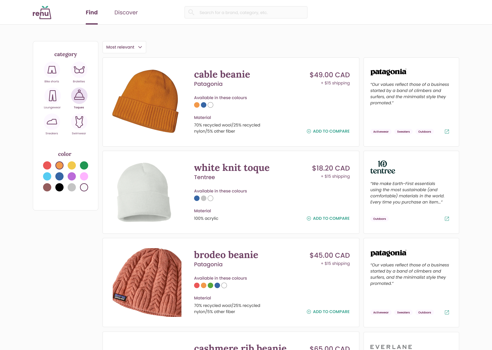
Users can explore sustainable brands to get informed about what each brand is about and discover their new favourite brands.
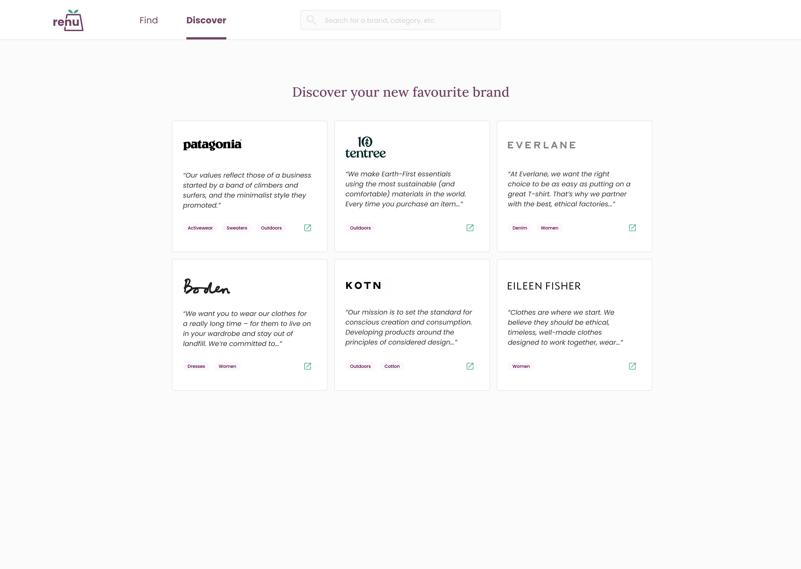
Users can weigh-in on pricing, material, and shipping costs between options before purchasing.
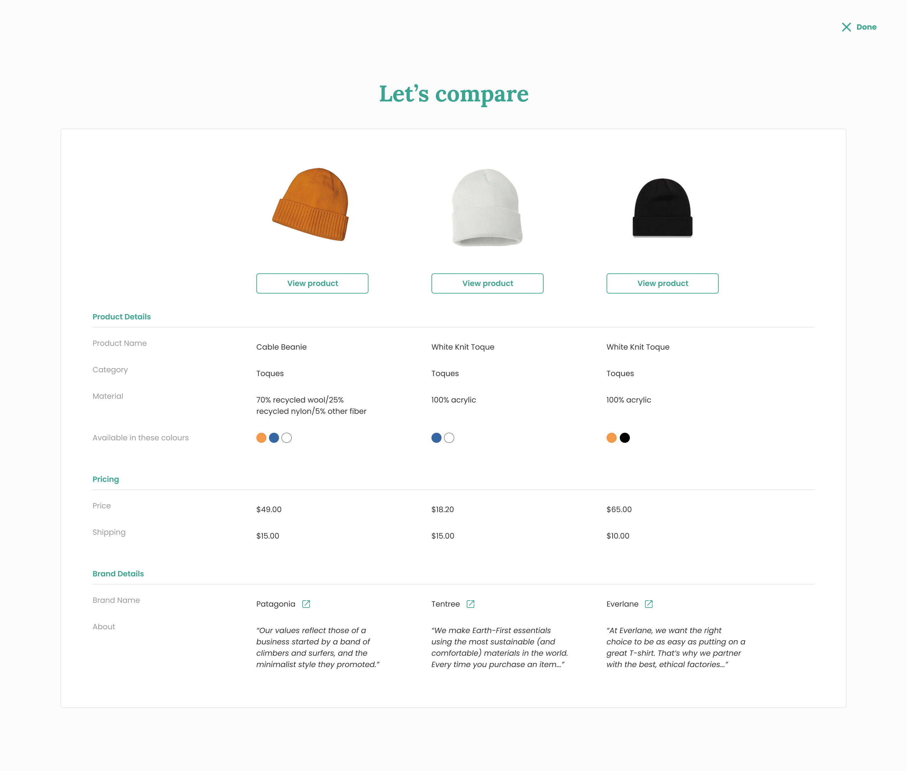
Understand
Survey
User journey
Define
Design goals
Design
Wireframes
Design options
We surveyed six Canadian students to understand their online clothing shopping habits. The following were our key insights.
Quality, style, and cost are the most important decision factors when deciding on a piece of clothing.
Accessibility, cost, and lack of awareness are what is most preventing users from shopping most sustainably.
Let's take a look at a typical online shopping experience according to our six surveyees. The following user is looking for a particular style of clothing.
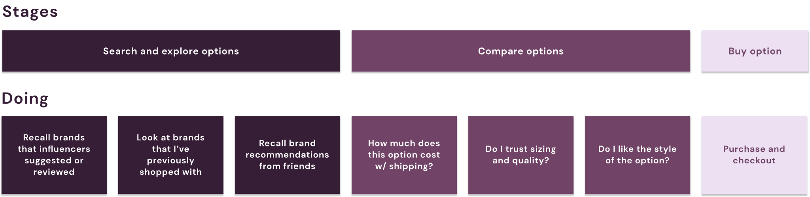
As you can see, the majority of online shopping time is spent searching and exploring options and comparing decision factors like style, cost, and quality against each other. The actual buying time is about one-fifth of this.
When shopping sustainably, users have an even wider range of options from both brands they are familiar with and less familiar sustainable ones, which means even more time spent researching and comparing options.
What's interesting to note is the tendency consumers have to be influenced by brand names. Whether it's brands recommended by influencers / friends or personal favourites. We'll say these names make up a consumer's brand repository.
Reduce the research and compare time induced when consumers choose to consider the sustainability factor
Introduce new sustainable brands into the consumer's brand repository
Users will use Renu to find sustainable options for the styles they want.
The modal provides an unnecessary click to access information. If our main purpose is to inform, then information should be readily visible and not intrusive.
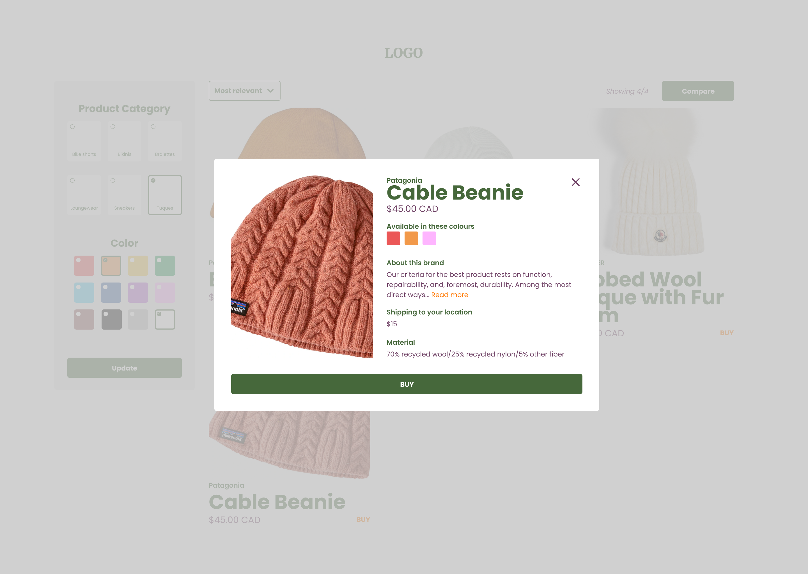
Cards provide information that is readily visible to the user. However, brand information is lost amid product information which is not ideal if our goal is to introduce users to sustainable brands.
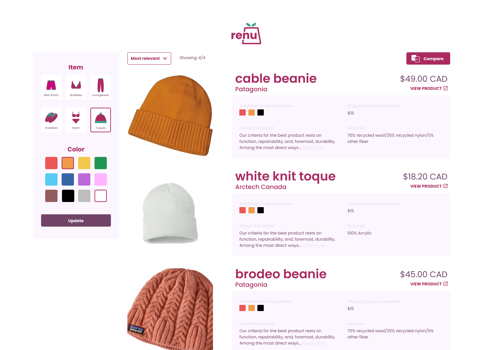
Brand cards highlight brand information. Consumers find sustainable options but are also introduced to the brand that makes them. This is important because we are trying to expand the consumer's brand repository.
Online shopping often means intermittently switching between tabs to compare options between brands.
In this solution it is difficult for users to keep track of what options were selected, especially if certain options are further down the page.
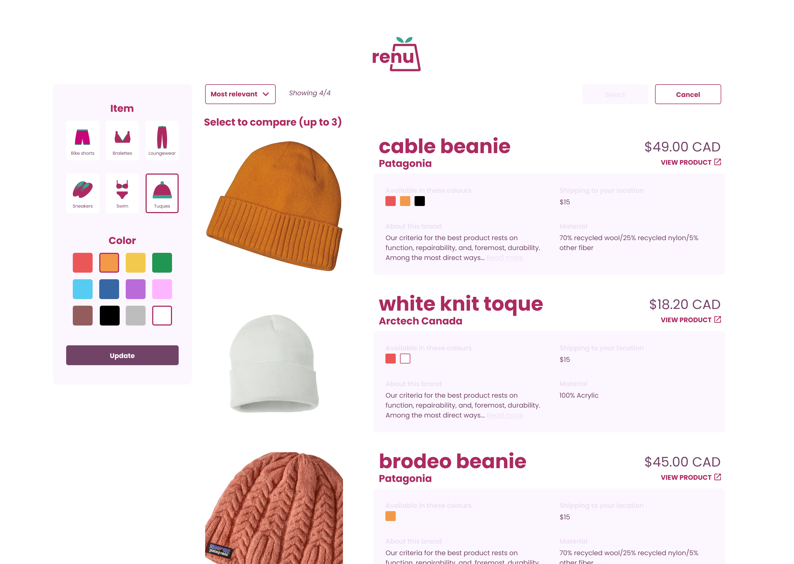
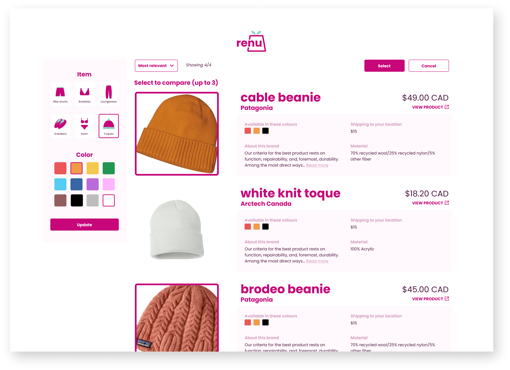
A shopping cart allows users to maintain visibility over selected options. However, this solution limits users to compare options within one page of search results.
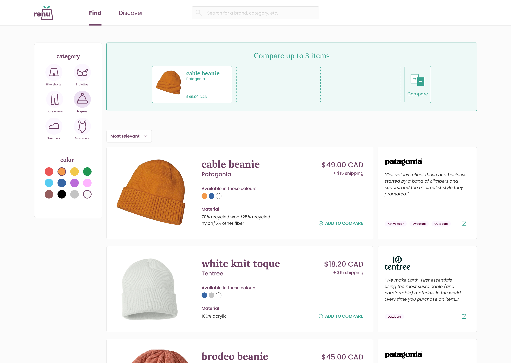
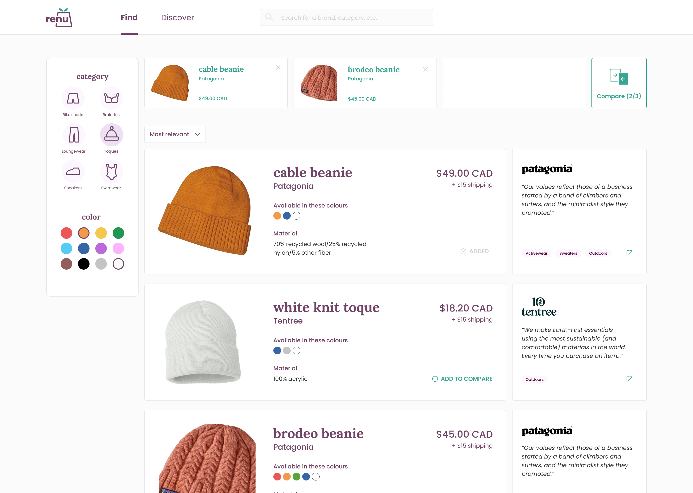
A universal shopping cart in the top right corner provides users with flexibility to compare options across the whole site.
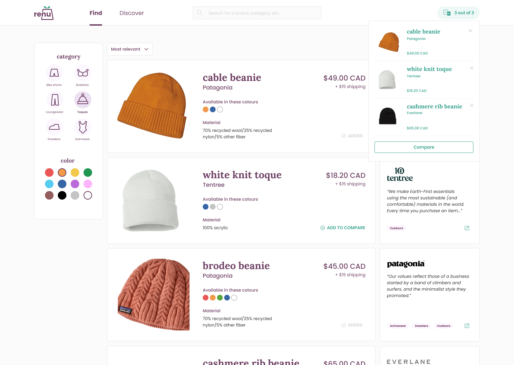
As I was the soul designer for this project, I attempted to engage developers early in the process. During our weekly meetings, I updated them on my progress with the designs and asked questions regarding feasibility. One problem that came up was regarding color swatches. For example, there are several shades of blue across brands. To approach this problem, I plan to first determine how much of a priority color is to the user based on our research. As color is inherent to style, it may be up to developers to find a technical solution.
My assumption about this design is that is will be the first step to engage users in a relationship with new sustainable brands. Therefore, I would collect metrics concerning how Renu has helped users build a sustainable brand repository. This may include asking users to select the brands they became familiar with after using the site for a while, or tracking engagement by analyzing how many users click into the respective brand websites from our brand cards.
As a designer on a team of three developers, I often felt like I wasn't a critical player on the team and interrupting the meeting to ask questions about how the product will be built felt like a burden. But good developers, like my peers, are good at explaining the technical stuff on a high level for designers. These questions will make you feel more involved with the product versus just being the front face of it. And maybe, you'll come across a technical constraint that no one has yet to consider.
You aren't a burden to rest of your team! You have important skills and perspectives as a designer. This is often something I felt when working with peers, and less so in a professional setting. I constantly needed to prove my worth because I wasn't doing the heavy lifting and building the actual product. But I guess the product wouldn't be there without the designer, so I've learned to accept that everyone on the team has something to contribute.
💙 Jennifer (yourself, Feb 2021)
© Coded with 💙 by jennyfurhe